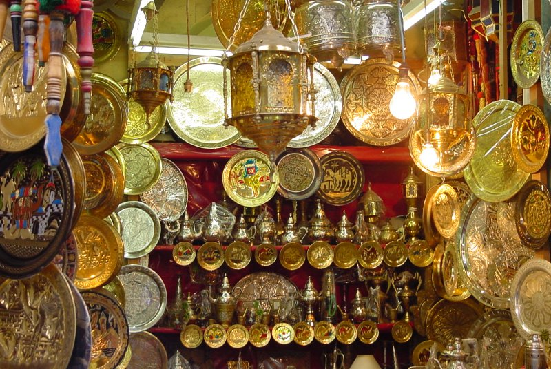

L’artisanat d’aujourd’hui se marie au design et à la mode pour inventer de nouveaux objets de la vie quotidienne. Les costumes traditionnels inspirent de nouvelles tenues de fête, les merveilleux tissages bédouins trouvent une nouvelle vie sous forme de meubles ou de coussins, le verre soufflé explore de nouvelles textures pour intégrer les intérieurs contemporains. Même les artisanes des villages font preuve d’inventivité et créent des formes inédites, alliant usages modernes et authenticité.
